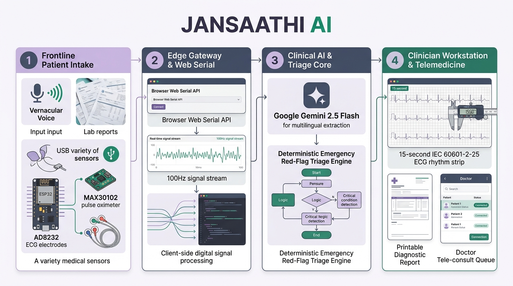
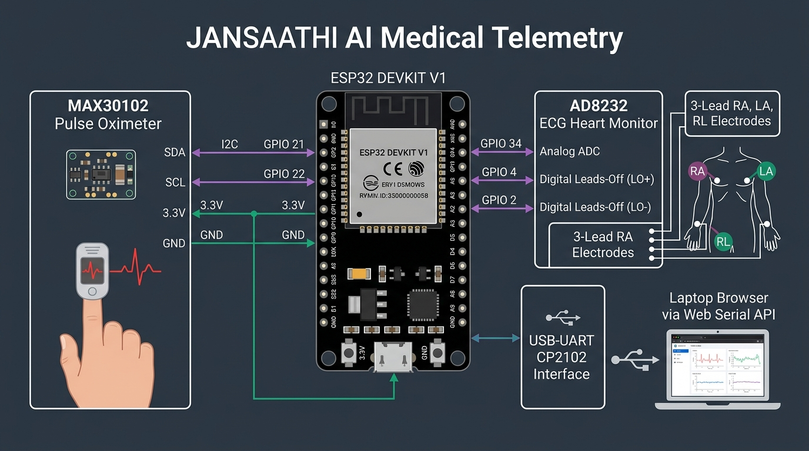
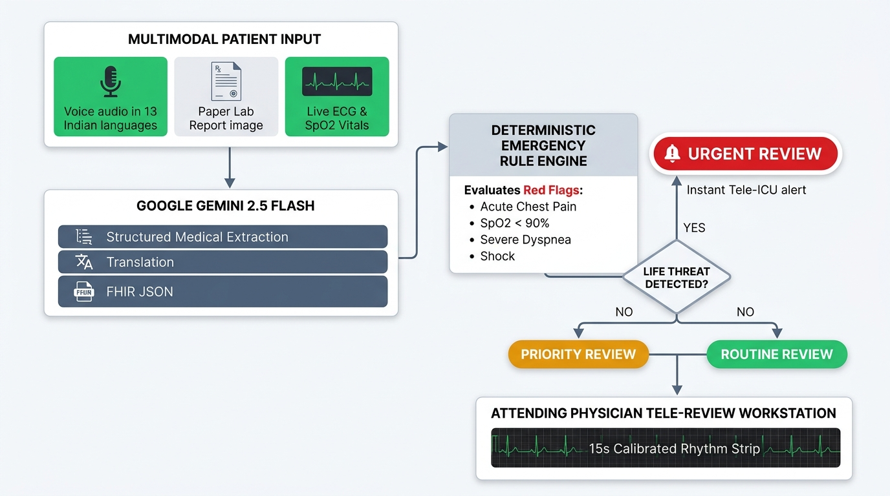
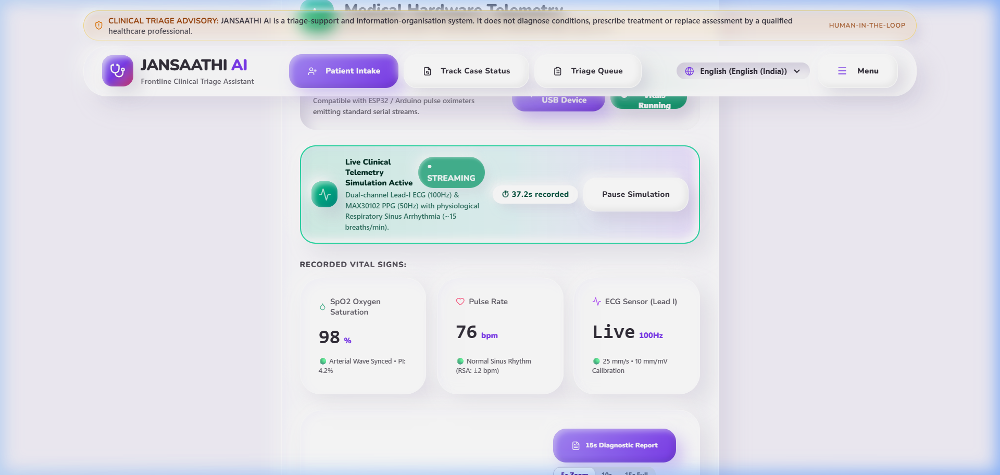
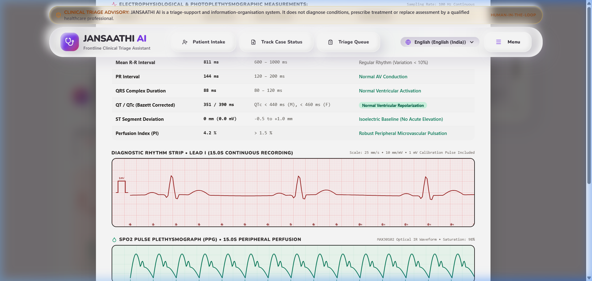

A low-cost, browser-native clinical workstation empowering community health workers (ASHA/ANM) with vernacular voice intake, paper report vision OCR, and real-time streaming ECG & SpO2 hardware telemetry.
Over 800 million citizens in rural India rely on overburdened Primary Health Centres (PHCs). Frontline health workers have no diagnostic equipment, causing severe delays in identifying acute emergencies.
70% of population in rural India; only 30% of doctors practice outside cities.
Hospital monitors are unaffordable and require specialized trained technicians.
Patients cannot express complex symptom histories in standard medical English.


Uses standard Web Serial API (`navigator.serial`) at 115200 baud. The browser directly interfaces with the ESP32 microcontroller, reading optical and electrophysiological signals.
Digital optical AC tracking filter (`irDc = (irDc * 255 + ir)/256`) eliminates ambient light drift, extracting SpO2, Pulse Rate, and arterial plethysmograph (PPG) at 50 Hz.
Lead-I RA/LA/RL electrodes sampled at 100 Hz. Features 25-sample noise debounce and analog rail voltage check (ADC < 120 or > 3980) to eliminate lead fluttering.
Parses JSON bursts (`ecg_samples`, `ppg_samples`) and ASCII key-value lines with automated port reconnection and COM port contention recovery.
Clinical triage cannot rely purely on generative probabilistic models. JANSAATHI AI implements a strict clinical safety net where acute emergencies are governed by deterministic rules.
Converts vernacular voice transcripts and paper lab report images into structured, FHIR-compliant clinical JSON with symptom timelines and missing information queries.
Zero hallucination tolerance: `RULE_CHEST_PAIN`, `RULE_RESPIRATORY_DISTRESS`, `RULE_CRITICAL_SPO2` (<90%), and `RULE_ARRHYTHMIA` instantly trigger `URGENT REVIEW`.
Automated case prioritization in doctor's queue with one-click disposition (Admit, Tele-Refer, Follow-up) and complete tamper-evident clinical audit trails.


The system renders genuine, active physiological telemetry. Both physical USB sensors and the built-in demo simulator feature dynamic physiological variability.
Resting heart rate fluctuates in lockstep with a 4.0-second respiration cycle (15 breaths/min), accompanied by subtle biological micro-jitter (±0.8 bpm).
The photoplethysmograph waveform is coupled to the ECG R-peak with physiological ventricular-to-peripheral transit delay, displaying steep anacrotic upstroke and aortic dicrotic notch.
Clinicians can freeze live scrolling waveforms on demand to inspect caliper measurements and resume streaming seamlessly without losing connection state.
Standard 15.0-second Lead-I acquisition rendered at standard 25 mm/s paper speed and 10 mm/mV voltage calibration on medical millimeter grid.

Real-time Lead-I ECG (100Hz) & MAX30102 pulse oximetry streaming via Web Serial.
Google Gemini 2.5 Flash intake across major Indian regional languages with lab report extraction.
IEC 60601-2-25 calibration, live waveform freeze, and printable doctor PDF dossier.